2026 Higher Computing Science marking instructions
Source: Scottish Qualifications Authority (SQA) / Qualifications Scotland. This is a StemInteract HTML companion, not an official HTML edition. Selectable text is supplied alongside original page images. Use the images or original PDF for equations, powers, fractions, vector notation, tables and diagrams; text extraction cannot fully preserve mathematical layout.
Jump to a question
PDF page 1
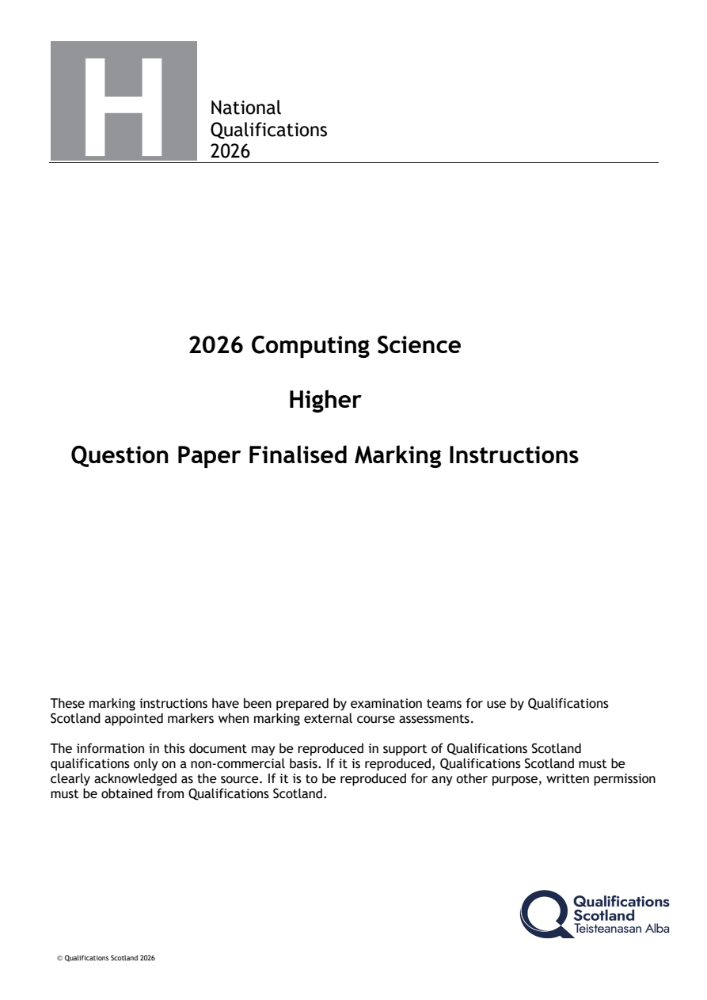
Selectable page text
National
Qualifications
2026
2026 Computing Science
Higher
Question Paper Finalised Marking Instructions
These marking instructions have been prepared by examination teams for use by Qualifications
Scotland appointed markers when marking external course assessments.
The information in this document may be reproduced in support of Qualifications Scotland
qualifications only on a non-commercial basis. If it is reproduced, Qualifications Scotland must be
clearly acknowledged as the source. If it is to be reproduced for any other purpose, written permission
must be obtained from Qualifications Scotland.
© Qualifications Scotland 2026PDF page 2
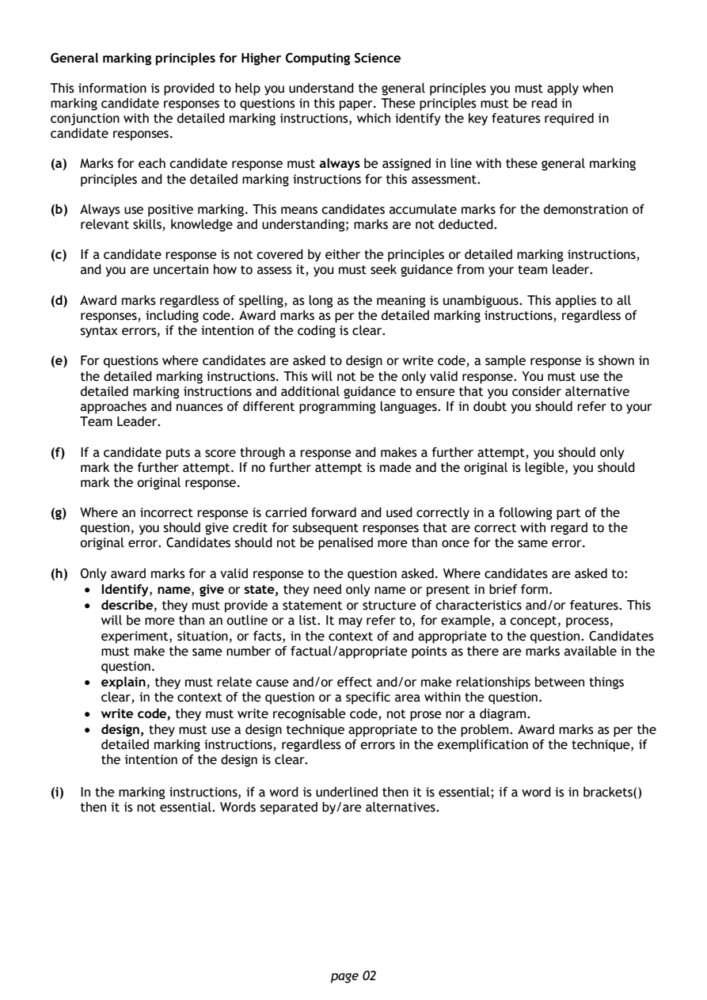
Selectable page text
General marking principles for Higher Computing Science
This information is provided to help you understand the general principles you must apply when
marking candidate responses to questions in this paper. These principles must be read in
conjunction with the detailed marking instructions, which identify the key features required in
candidate responses.
(a) Marks for each candidate response must always be assigned in line with these general marking
principles and the detailed marking instructions for this assessment.
(b) Always use positive marking. This means candidates accumulate marks for the demonstration of
relevant skills, knowledge and understanding; marks are not deducted.
(c) If a candidate response is not covered by either the principles or detailed marking instructions,
and you are uncertain how to assess it, you must seek guidance from your team leader.
(d) Award marks regardless of spelling, as long as the meaning is unambiguous. This applies to all
responses, including code. Award marks as per the detailed marking instructions, regardless of
syntax errors, if the intention of the coding is clear.
(e) For questions where candidates are asked to design or write code, a sample response is shown in
the detailed marking instructions. This will not be the only valid response. You must use the
detailed marking instructions and additional guidance to ensure that you consider alternative
approaches and nuances of different programming languages. If in doubt you should refer to your
Team Leader.
(f) If a candidate puts a score through a response and makes a further attempt, you should only
mark the further attempt. If no further attempt is made and the original is legible, you should
mark the original response.
(g) Where an incorrect response is carried forward and used correctly in a following part of the
question, you should give credit for subsequent responses that are correct with regard to the
original error. Candidates should not be penalised more than once for the same error.
(h) Only award marks for a valid response to the question asked. Where candidates are asked to:
• Identify, name, give or state, they need only name or present in brief form.
• describe, they must provide a statement or structure of characteristics and/or features. This
will be more than an outline or a list. It may refer to, for example, a concept, process,
experiment, situation, or facts, in the context of and appropriate to the question. Candidates
must make the same number of factual/appropriate points as there are marks available in the
question.
• explain, they must relate cause and/or effect and/or make relationships between things
clear, in the context of the question or a specific area within the question.
• write code, they must write recognisable code, not prose nor a diagram.
• design, they must use a design technique appropriate to the problem. Award marks as per the
detailed marking instructions, regardless of errors in the exemplification of the technique, if
the intention of the design is clear.
(i) In the marking instructions, if a word is underlined then it is essential; if a word is in brackets()
then it is not essential. Words separated by/are alternatives.
page 02PDF page 3
Question 1Question 2Question 3Question 4Question 5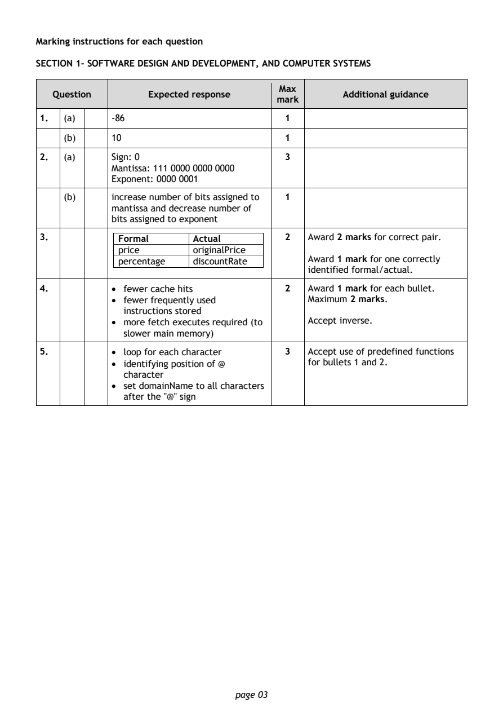
Selectable page text
Marking instructions for each question
SECTION 1- SOFTWARE DESIGN AND DEVELOPMENT, AND COMPUTER SYSTEMS
Max
Question Expected response Additional guidance
mark
1. (a) -86 1
(b) 10 1
2. (a) Sign: 0 3
Mantissa: 111 0000 0000 0000
Exponent: 0000 0001
(b) increase number of bits assigned to 1
mantissa and decrease number of
bits assigned to exponent
3. Formal Actual 2 Award 2 marks for correct pair.
price originalPrice
percentage discountRate Award 1 mark for one correctly
identified formal/actual.
4. • fewer cache hits 2 Award 1 mark for each bullet.
• fewer frequently used Maximum 2 marks.
instructions stored
• more fetch executes required (to Accept inverse.
slower main memory)
5. • loop for each character 3 Accept use of predefined functions
• identifying position of @ for bullets 1 and 2.
character
• set domainName to all characters
after the "@" sign
page 03PDF page 4
Question 6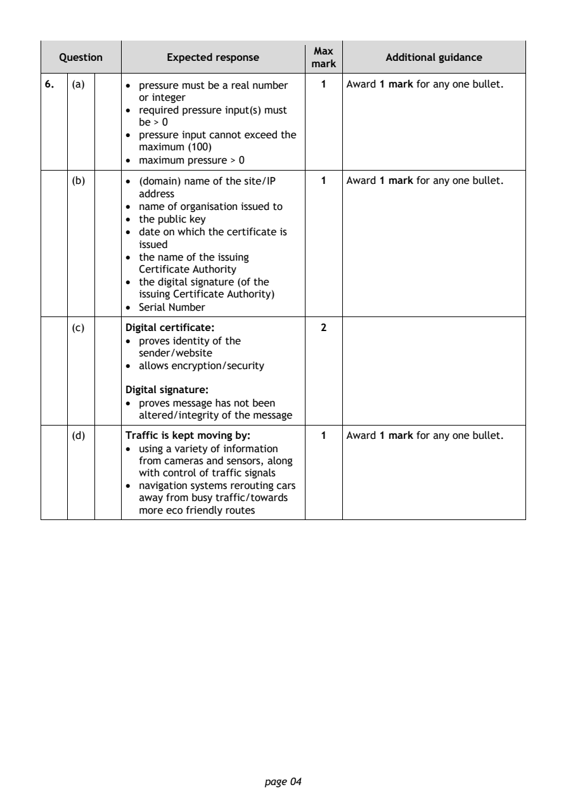
Selectable page text
Max
Question Expected response Additional guidance
mark
6. (a) • pressure must be a real number 1 Award 1 mark for any one bullet.
or integer
• required pressure input(s) must
be > 0
• pressure input cannot exceed the
maximum (100)
• maximum pressure > 0
(b) • (domain) name of the site/IP 1 Award 1 mark for any one bullet.
address
• name of organisation issued to
• the public key
• date on which the certificate is
issued
• the name of the issuing
Certificate Authority
• the digital signature (of the
issuing Certificate Authority)
• Serial Number
(c) Digital certificate: 2
• proves identity of the
sender/website
• allows encryption/security
Digital signature:
• proves message has not been
altered/integrity of the message
(d) Traffic is kept moving by: 1 Award 1 mark for any one bullet.
• using a variety of information
from cameras and sensors, along
with control of traffic signals
• navigation systems rerouting cars
away from busy traffic/towards
more eco friendly routes
page 04PDF page 5
Question 7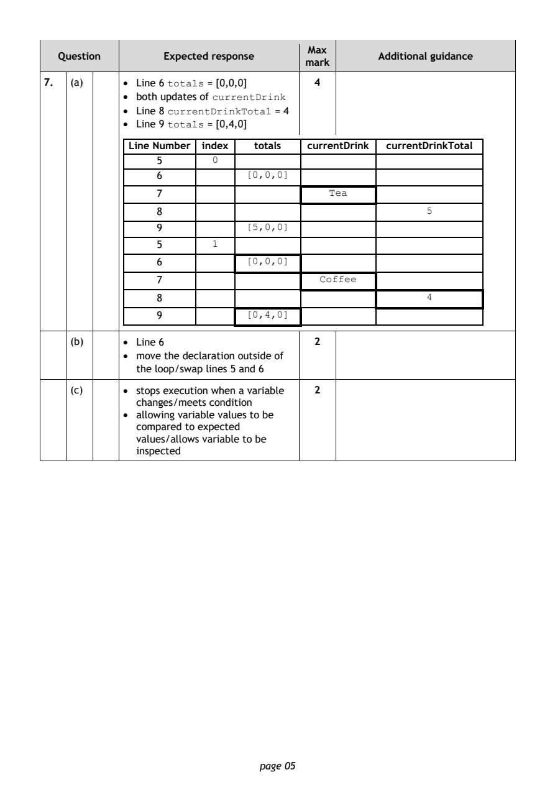
Selectable page text
Max
Question Expected response Additional guidance
mark
7. (a) • Line 6 totals = [0,0,0] 4
• both updates of currentDrink
• Line 8 currentDrinkTotal = 4
• Line 9 totals = [0,4,0]
Line Number index totals currentDrink currentDrinkTotal
5 0
6 [0,0,0]
7 Tea
8 5
9 [5,0,0]
5 1
6 [0,0,0]
7 Coffee
8 4
9 [0,4,0]
(b) • Line 6 2
• move the declaration outside of
the loop/swap lines 5 and 6
(c) • stops execution when a variable 2
changes/meets condition
• allowing variable values to be
compared to expected
values/allows variable to be
inspected
page 05PDF page 6
Question 8Question 9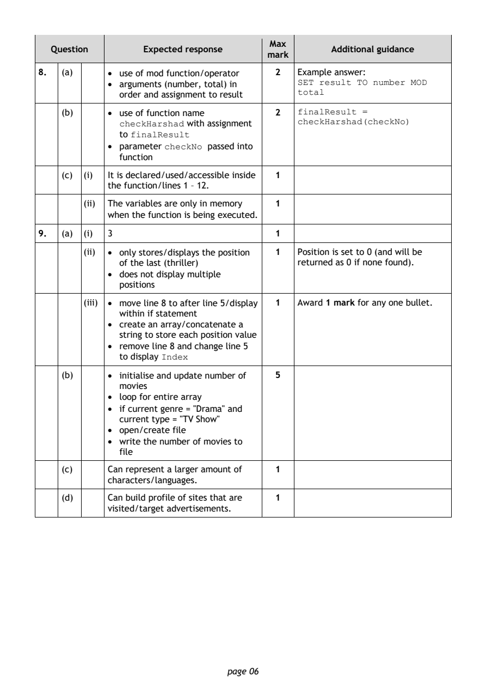
Selectable page text
Max
Question Expected response Additional guidance
mark
8. (a) • use of mod function/operator 2 Example answer:
• arguments (number, total) in SET result TO number MOD
total
order and assignment to result
(b) • use of function name 2 finalResult =
checkHarshad with assignment checkHarshad(checkNo)
to finalResult
• parameter checkNo passed into
function
(c) (i) It is declared/used/accessible inside 1
the function/lines 1 – 12.
(ii) The variables are only in memory 1
when the function is being executed.
9. (a) (i) 3 1
(ii) • only stores/displays the position 1 Position is set to 0 (and will be
of the last (thriller) returned as 0 if none found).
• does not display multiple
positions
(iii) • move line 8 to after line 5/display 1 Award 1 mark for any one bullet.
within if statement
• create an array/concatenate a
string to store each position value
• remove line 8 and change line 5
to display Index
(b) • initialise and update number of 5
movies
• loop for entire array
• if current genre = "Drama" and
current type = "TV Show"
• open/create file
• write the number of movies to
file
(c) Can represent a larger amount of 1
characters/languages.
(d) Can build profile of sites that are 1
visited/target advertisements.
page 06PDF page 7
Question 10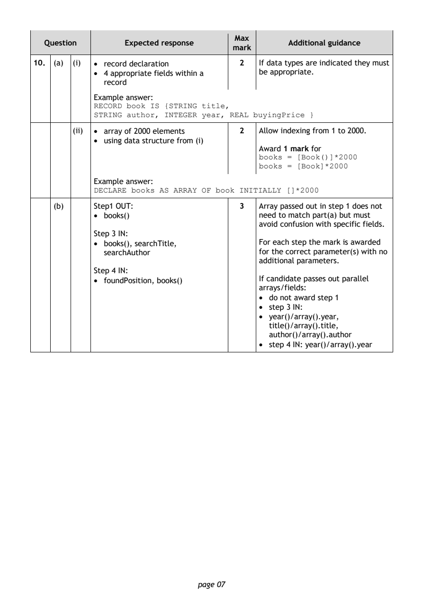
Selectable page text
Max
Question Expected response Additional guidance
mark
10. (a) (i) • record declaration 2 If data types are indicated they must
• 4 appropriate fields within a be appropriate.
record
Example answer:
RECORD book IS {STRING title,
STRING author, INTEGER year, REAL buyingPrice }
(ii) • array of 2000 elements 2 Allow indexing from 1 to 2000.
• using data structure from (i)
Award 1 mark for
books = [Book()]*2000
books = [Book]*2000
Example answer:
DECLARE books AS ARRAY OF book INITIALLY []*2000
(b) Step1 OUT: 3 Array passed out in step 1 does not
• books() need to match part(a) but must
avoid confusion with specific fields.
Step 3 IN:
• books(), searchTitle, For each step the mark is awarded
searchAuthor for the correct parameter(s) with no
additional parameters.
Step 4 IN:
• foundPosition, books() If candidate passes out parallel
arrays/fields:
• do not award step 1
• step 3 IN:
• year()/array().year,
title()/array().title,
author()/array().author
• step 4 IN: year()/array().year
page 07PDF page 8
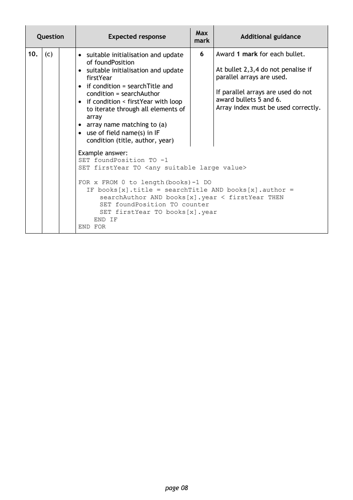
Selectable page text
Max
Question Expected response Additional guidance
mark
10. (c) • suitable initialisation and update 6 Award 1 mark for each bullet.
of foundPosition
• suitable initialisation and update At bullet 2,3,4 do not penalise if
firstYear parallel arrays are used.
• if condition = searchTitle and
condition = searchAuthor If parallel arrays are used do not
• if condition < firstYear with loop award bullets 5 and 6.
to iterate through all elements of Array index must be used correctly.
array
• array name matching to (a)
• use of field name(s) in IF
condition (title, author, year)
Example answer:
SET foundPosition TO -1
SET firstYear TO <any suitable large value>
FOR x FROM 0 to length(books)-1 DO
IF books[x].title = searchTitle AND books[x].author =
searchAuthor AND books[x].year < firstYear THEN
SET foundPosition TO counter
SET firstYear TO books[x].year
END IF
END FOR
page 08PDF page 9
Question 11Question 12Question 13Question 14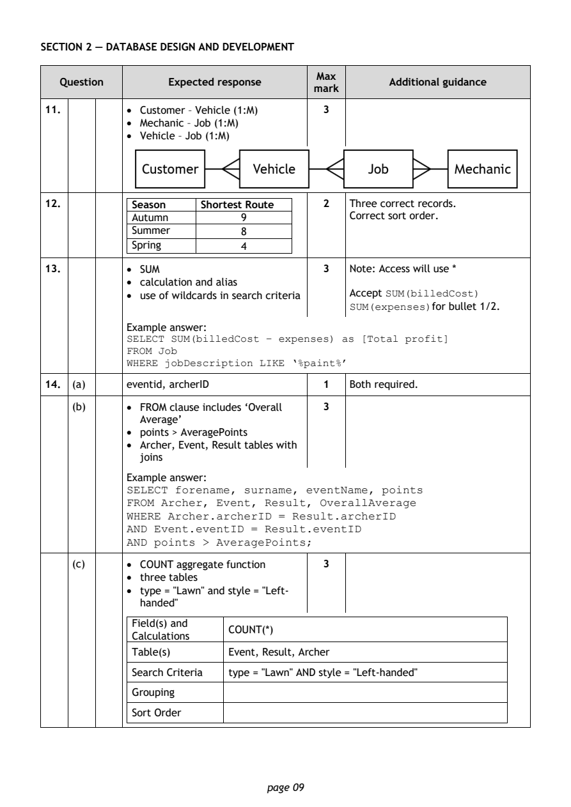
Selectable page text
SECTION 2 — DATABASE DESIGN AND DEVELOPMENT
Max
Question Expected response Additional guidance
mark
11. • Customer – Vehicle (1:M) 3
• Mechanic – Job (1:M)
• Vehicle – Job (1:M)
12. Season Shortest Route 2 Three correct records.
Autumn 9 Correct sort order.
Summer 8
Spring 4
13. • SUM 3 Note: Access will use *
• calculation and alias
• use of wildcards in search criteria Accept SUM(billedCost)
SUM(expenses)for bullet 1/2.
Example answer:
SELECT SUM(billedCost – expenses) as [Total profit]
FROM Job
WHERE jobDescription LIKE ‘%paint%’
14. (a) eventid, archerID 1 Both required.
(b) • FROM clause includes ‘Overall 3
Average’
• points > AveragePoints
• Archer, Event, Result tables with
joins
Example answer:
SELECT forename, surname, eventName, points
FROM Archer, Event, Result, OverallAverage
WHERE Archer.archerID = Result.archerID
AND Event.eventID = Result.eventID
AND points > AveragePoints;
(c) • COUNT aggregate function 3
• three tables
• type = "Lawn" and style = "Left-
handed"
Field(s) and
COUNT(*)
Calculations
Table(s) Event, Result, Archer
Search Criteria type = "Lawn" AND style = "Left-handed"
Grouping
Sort Order
page 09PDF page 10
Question 15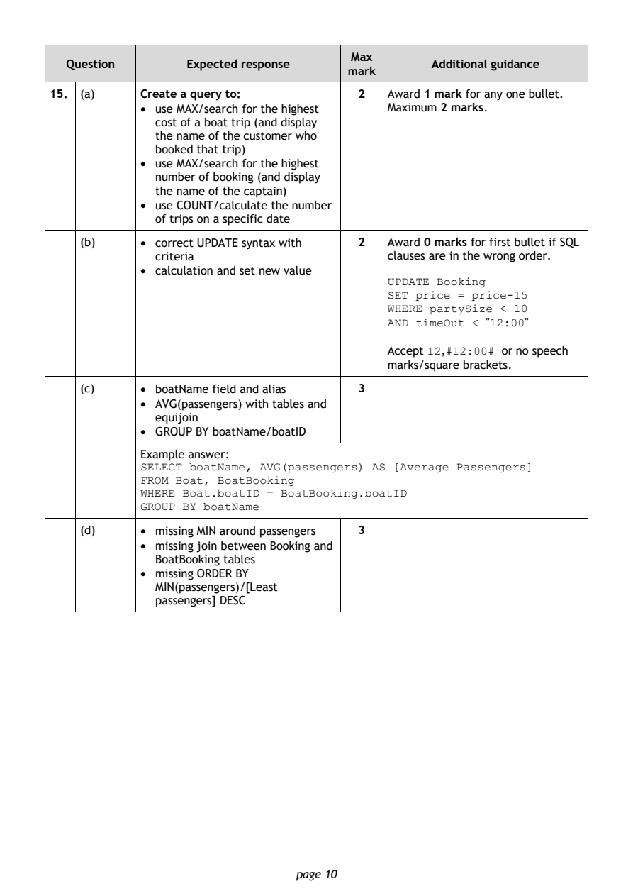
Selectable page text
Max
Question Expected response Additional guidance
mark
15. (a) Create a query to: 2 Award 1 mark for any one bullet.
• use MAX/search for the highest Maximum 2 marks.
cost of a boat trip (and display
the name of the customer who
booked that trip)
• use MAX/search for the highest
number of booking (and display
the name of the captain)
• use COUNT/calculate the number
of trips on a specific date
(b) • correct UPDATE syntax with 2 Award 0 marks for first bullet if SQL
criteria clauses are in the wrong order.
• calculation and set new value
UPDATE Booking
SET price = price-15
WHERE partySize < 10
AND timeOut < "12:00"
Accept 12,#12:00# or no speech
marks/square brackets.
(c) • boatName field and alias 3
• AVG(passengers) with tables and
equijoin
• GROUP BY boatName/boatID
Example answer:
SELECT boatName, AVG(passengers) AS [Average Passengers]
FROM Boat, BoatBooking
WHERE Boat.boatID = BoatBooking.boatID
GROUP BY boatName
(d) • missing MIN around passengers 3
• missing join between Booking and
BoatBooking tables
• missing ORDER BY
MIN(passengers)/[Least
passengers] DESC
page 10PDF page 11
Question 16Question 17Question 18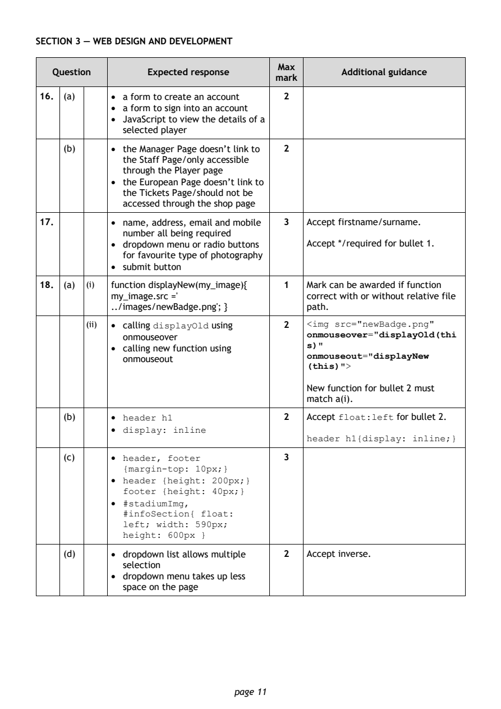
Selectable page text
SECTION 3 — WEB DESIGN AND DEVELOPMENT
Max
Question Expected response Additional guidance
mark
16. (a) • a form to create an account 2
• a form to sign into an account
• JavaScript to view the details of a
selected player
(b) • the Manager Page doesn’t link to 2
the Staff Page/only accessible
through the Player page
• the European Page doesn’t link to
the Tickets Page/should not be
accessed through the shop page
17. • name, address, email and mobile 3 Accept firstname/surname.
number all being required
• dropdown menu or radio buttons Accept */required for bullet 1.
for favourite type of photography
• submit button
18. (a) (i) function displayNew(my_image){ 1 Mark can be awarded if function
my_image.src =' correct with or without relative file
../images/newBadge.png'; } path.
(ii) • calling displayOld using 2 <img src="newBadge.png"
onmouseover="displayOld(thi
onmouseover
s)"
• calling new function using
onmouseout="displayNew
onmouseout
(this)">
New function for bullet 2 must
match a(i).
(b) • header h1 2 Accept float:left for bullet 2.
• display: inline
header h1{display: inline;}
(c) • header, footer 3
{margin-top: 10px;}
• header {height: 200px;}
footer {height: 40px;}
• #stadiumImg,
#infoSection{ float:
left; width: 590px;
height: 600px }
(d) • dropdown list allows multiple 2 Accept inverse.
selection
• dropdown menu takes up less
space on the page
page 11PDF page 12
Question 19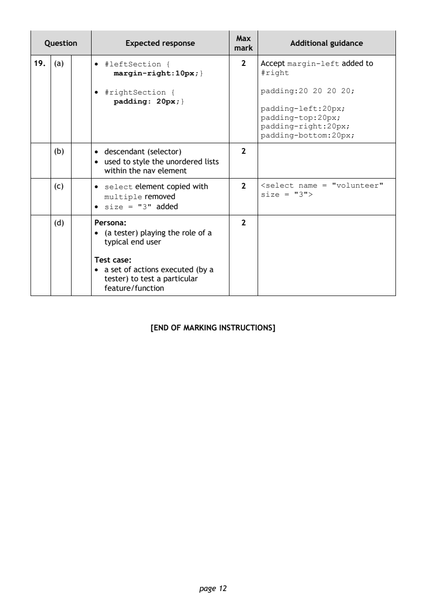
Selectable page text
Max
Question Expected response Additional guidance
mark
19. (a) • #leftSection { 2 Accept margin-left added to
margin-right:10px;} #right
• #rightSection { padding:20 20 20 20;
padding: 20px;}
padding-left:20px;
padding-top:20px;
padding-right:20px;
padding-bottom:20px;
(b) • descendant (selector) 2
• used to style the unordered lists
within the nav element
(c) • select element copied with 2 <select name = "volunteer"
size = "3">
multiple removed
• size = "3" added
(d) Persona: 2
• (a tester) playing the role of a
typical end user
Test case:
• a set of actions executed (by a
tester) to test a particular
feature/function
[END OF MARKING INSTRUCTIONS]
page 12